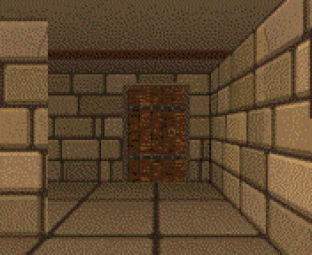

Ren, the bard
Down at heel, behind with the rent, and somehow the only one in the city who still remembers the old songs. Call him something else if you like.
Someone is stealing the songs of Mardle-on-Wend.
Long ago, the city's builders sang protective wards into every stone, and every song about a hero who defended Mardle made its walls a little stronger. Now the songs are vanishing, bottled one by one by the Lord Archivist, Ambrose Quill. People are forgetting their heroes. The walls are cracking. And the horde of Kesh the Unhurried is forty days away.
Only one person still remembers the old songs: a down-at-heel bard with a sarcastic lute. Gather a party, go down beneath the city, win the songs back and sing the walls whole again, before the horde arrives.

Who's who
Funny on the surface, sincere underneath. A few of the folk you'll meet:
Down at heel, behind with the rent, and somehow the only one in the city who still remembers the old songs. Call him something else if you like.
The bard's lute: cursed, alive and sarcastic. Has opinions about your decisions. Won't play anything in a minor key before lunch.
Landlady of the Drowned Fiddler. Keeps the roster, the rumour mill, and an exact note of what everyone owes her.
The City Watch, all of it, if you count his dog. Counts down the days until the horde arrives.
The Lord Archivist. Precise, polite and faintly pompous, and he is bottling every song in Mardle. Nobody ever wrote one about him.
Features
What's planned. Plans change; the horde doesn't.
The bard leads, with five companions. Take the ready-made party, or roll your own at the Guild: warriors, rogues, monks, mages and a priest, in seven races.
Walk the streets of Mardle-on-Wend square by square, by day and by night. Then go down: cellars, vaults and stranger places, each a page of graph paper.
Walls painted in true perspective, with torchlight fading into the dark. Monsters appear as big, animated portraits.
The bard's songs work in fights and out of them. Win back a stolen song and sing it at the wall to mend a stretch of stone.
Casters fill their memory with spells when they rest, and each one is forgotten once cast. Some names are longer than the spells.
The horde is coming, and every step counts. Hurry, or go back for every song. The clock won't wait for you.
Easy for younger players, normal for most, and old-school for anyone who misses saving only at the inn.
The automap shows every square you've walked. Save anywhere, to the SD card. (Old-school: bring graph paper.)
Tunes for the town, the tavern, every dungeon and the fights, on the Next's three sound chips. The bard's songs are real tunes, with words.
A Heroes' Guild that wants forms filled in, a Thieves' Union with a pension scheme, and monsters with grievances. You can talk your way out of some fights.
A love letter to The Bard's Tale, Wizardry, Dungeon Master and their kin. Old hands will spot a few old friends.
Jokes, friendly folk and no gore: beaten foes run off. A child can finish it on easy.
Screens
The cellars and a street of the town, as a real Next draws them. Click a picture to see it bigger.
Progress
Test build
Unfinished, and free: the town and the first two levels under it, with the third begun. For testers: expect rough edges.
unsung folder to your SD card. The .dat files are the game's pictures: keep them beside unsung.nex. Pick unsung.nex in the Browser and press ENTER. A 1MB or 2MB Next both work (a 2MB one unpacks everything at the start, then never waits for the card).unsung folder, so it finds the .dat files, and open unsung.nex.Changelog